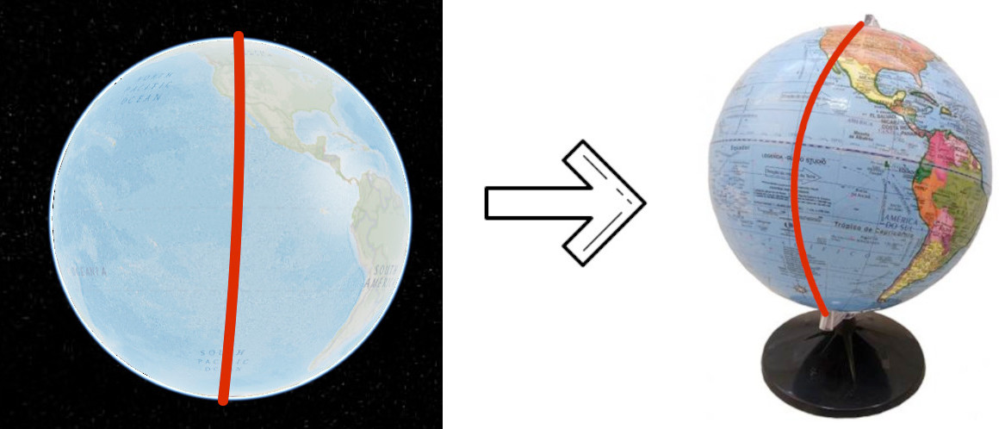
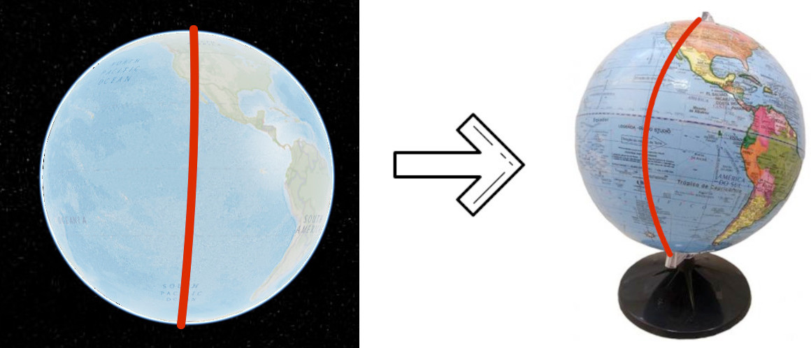

Ajuda
A imagem abaixo ilustra a visualização do Globo Virtual e a respectiva posição no Globo Terrestre
Sobre
Autor: Guilherme Rodrigues
A imagem abaixo ilustra a visualização do Globo Virtual e a respectiva posição no Globo Terrestre
Autor: Guilherme Rodrigues